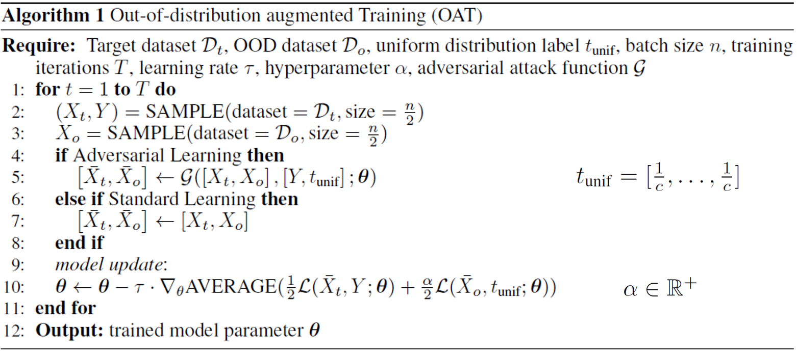
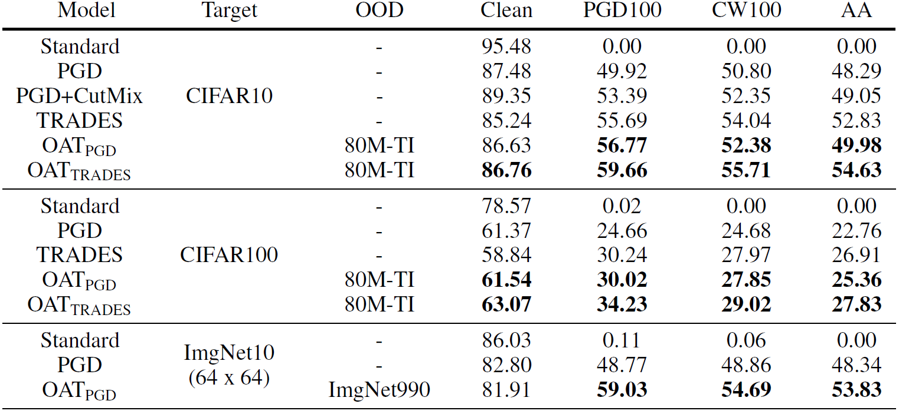

Removing Undesirable Feature Contributions Using Out-of-Distribution Data
Saehyung Lee (CV), Changhwa Park, Hyungyu Lee, Jihun Yi, Jonghyun Lee, Sungroh Yoon

Abstract
Several data augmentation methods deploy unlabeled-in-distribution (UID) data to bridge the gap between the training and inference of neural networks.
However, these methods have clear limitations in terms of availability of UID data and dependence of algorithms on pseudo-labels.
Herein, we propose a data augmentation method to improve generalization in both adversarial and standard learning by using out-of-distribution (OOD) data that are devoid of the abovementioned issues.
We show how to improve generalization theoretically using OOD data in each learning scenario and complement our theoretical analysis with experiments on CIFAR-10, CIFAR-100, and a subset of ImageNet.
The results indicate that undesirable features are shared even among image data that seem to have little correlation from a human point of view.
We also present the advantages of the proposed method through comparison with other data augmentation methods, which can be used in the absence of UID data.
Furthermore, we demonstrate that the proposed method can further improve the existing state-of-the-art adversarial training.
Algorithm

Results

We created OOD datasets from the 80 Million Tiny Images dataset (Torralba et al.,2008) (80M-TI), using the work of Carmon et al. (2019) for CIFAR-10 and CIFAR-100, respectively.
In addition, we resized (using a bilinear interpolation) ImageNet to dimensions of 64x64 and divided it into datasets containing 10 and 990 classes, respectively; these are called ImgNet10 and ImgNet990.